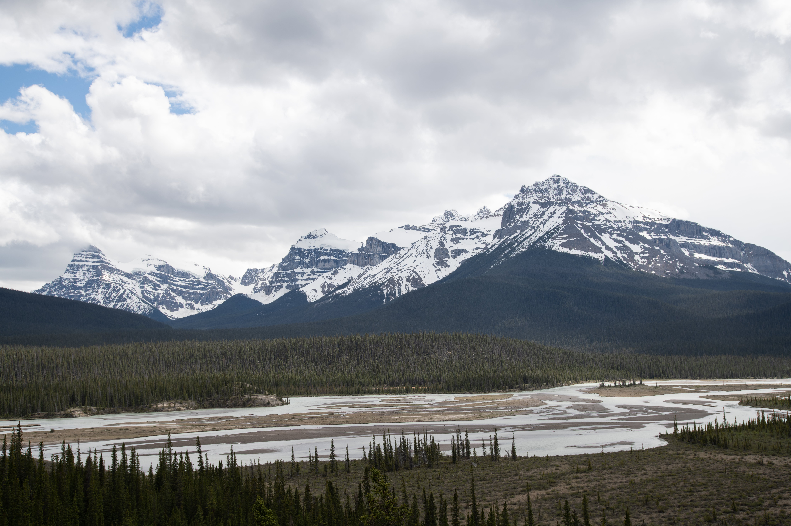
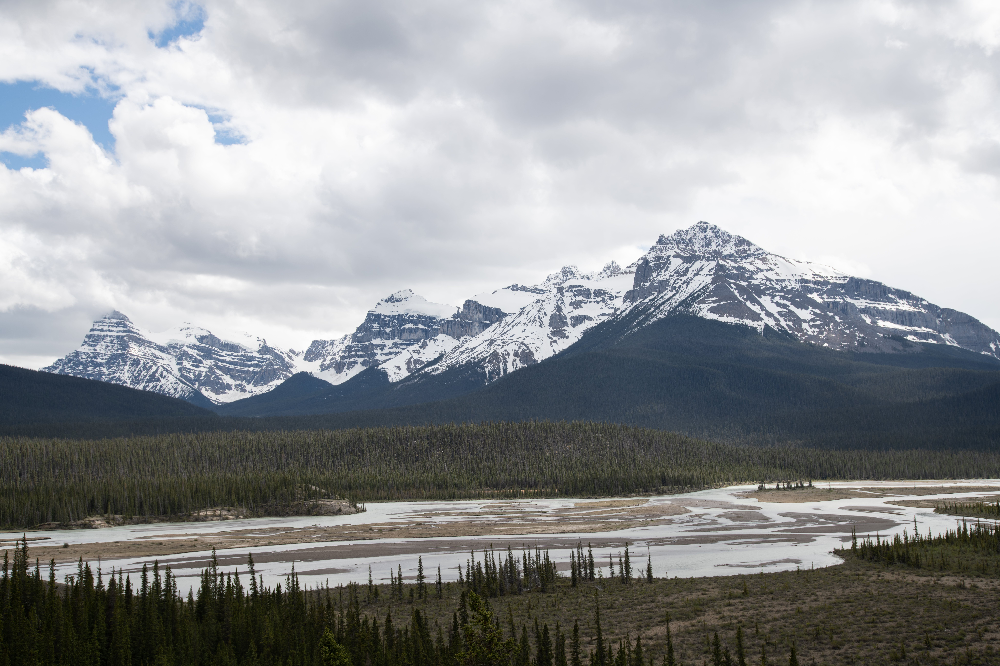

Lots of variety on the pistes, a wide range of offers for families and a colourful nightlife.
The range of descents on offer extends from steep slopes for experts to broad family-friendly, sunny pistes to impress all winter sports fans - beginners, families and professionals alike.
There are many beautiful vantage points where visitors can stop and relax: these include the mountain station which offers magnificent views.
Conservation
Our conservationists work on preventing avalanches happening in skii resorts to ensure safety for our tourists.
We make efforts by having explosives - to control the release of snow avalanches, ski cutting, snow pits, and detailed slope analysis to mitigate the risk of avalanches.
 
